항공산업기사 (2008-09-07 기출문제)
1과목: 항공역학
1. 경계층의 박리현상에 대한 설명으로 가장 옳은 것은?
- 레이놀즈수가 작을 때 잘 일어난다.
- 흐름 속에 진동이 있는 현상을 말한다.
- 층류가 난류로 변하는 현상을 말한다.
- 물체표면의 경계층이 떨어져 나가는 현상을 말한다.
(정답률: 87%)

2. 다음 중 힌지 모멘트에 영향을 주는 요소가 아닌 것은?
- 밀도
- 양력계수
- 비행속도
- 조종면의 폭
(정답률: 59%)
3. 항공기가 등속수평비행을 하기 위한 조건으로 옳은 것은? (단, L은 양력, D는 항력, T는 추력, W는 항공기 무게이다.)
- L = W, T ＞ D
- L = W, T = D
- T = W, L ＞ D
- T = W, L = D
(정답률: 88%)
4. 수직 꼬리날개가 실속하는 큰 옆 미끄럼 각에서도 방향 안정을 유지하기 위한 목적의 장치는?
- 윙릿(Winglet)
- 도살 핀(Dorsal Fin)
- 드루프 플랩(Droop flap)
- 쥬리 스트러트(Jury strut)
(정답률: 91%)
5. 조종사의 무게 70kg, 낙하산의 지름 7m, 항력계수 1.3일 때 1000m의 상공을 일정속도로 강하하고 있다면이 속도는 약 몇 m/s인가?(오류 신고가 접수된 문제입니다. 반드시 정답과 해설을 확인하시기 바랍니다.)
- 3.21
- 3.74
- 4.12
- 4.85
(정답률: 60%)
6. 무게가 500kgf 인 어떤 비행기가 30도의 경사로 정상선회를 하고 있다면 이때 비행기의 원심력은 약 몇 kgf 인가?
- 250
- 289
- 353
- 433
(정답률: 71%)
7. 플랩을 사용하여 날개의 최대양력계수를 2배로 증가시켰다면 실속속도는 약 몇 배가 되는가?
- 0.5
- 0.7
- 1.4
- 2.0
(정답률: 45%)
8. 항공기가 수평선과 날개의 시위선이 20도를 유지하고, 17도의 각도로 상승비행을 하고 있다면 이 때 받음각은 몇 도인가?
- 3
- 17
- 23
- 37
(정답률: 67%)
9. 다음 중 정적안정과 동적안정의 관계를 가장 옳게 설명한 것은?
- 동적안정은 정적안정의 전제 조건이 된다.
- 정적안정이 있다고 해서 반드시 동적안정도 있다고는 할 수 없다.
- 정적안정이 있는 대부분의 경우에는 동적안정은 기대할 수 없다.
- 정적안정과 동적안정은 진폭의 면에서 서로 반대 되는 개념이다.
(정답률: 71%)
10. 제트 비행기의 실제적인 이륙거리를 가장 옳게 설명한 것은?
- 비행기 기관이 작동한 후 이륙할 때까지의 모든 이동거리를 말한다.
- 비행기 기관이 작동한 후 고도 50ft까지 도달하는데 소요된 이륙상승거리의 합을 말한다.
- 지상활주거리와 고도 35ft까지 도달하는데 소요된 이륙상승거리의 합을 말한다.
- 지상활주거리와 고도 50ft까지 도달하는데 소요된 이륙상승거리의 합을 말한다.
(정답률: 74%)
11. 다음 중 헬리콥터 회전날개의 추력을 계산하는데 사용되는 이론은?
- 엔진의 연료 소비율에 따른 연소 이론
- 로우터 브레이드의 코닝각의 속도변화 이론
- 로우터 브레이드의 회전관성을 이용한 관성 이론
- 회전면 앞에서의 공기유동량과 회전면 뒤에서의 공기 유동량의 차이를 운동량에 적용한 이론.
(정답률: 83%)
12. 다음 중 제트항공기가 최대항속시간을 비행하기 위한 조건으로 옳은 것은?
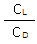
가최대일때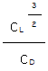
가최대일때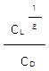
가최대일때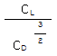
가최대일때
(정답률: 83%)
13. 비행기 날개의 상반각(Dihedral angle)으로 얻을수 있는 주된 효과는?
- 세로안정을 준다.
- 익단 실속을 방지한다.
- 방향의 동적인 안정을 준다.
- 옆 미끄럼에 의한 옆놀이에 정적인 안정을 준다.
(정답률: 85%)
14. 다음 중 항공기 받음각이 α인 날개의 양력계수를 구하는 식은?
- π sin α
- 2π sin α
- π cos α
- 2π cos α
(정답률: 54%)
15. 지름이 6.7ft인 프로펠러가 2800rpm으로 회전하면서 50mph로 비행하고 있다면 이 프로펠러의 진행율은 약 얼마인가?
- 0.23
- 0.37
- 0.62
- 0.76
(정답률: 36%)
16. 다음 중 항공기 축에 대한 조종면과 회전 동작명칭을 옳게 짝지은 것은?
- 가로축-방향 키-키놀이
- 가로축-방향 키-옆놀이
- 세로축-승강 키-빗놀이
- 세로축-도움 날개-옆놀이
(정답률: 87%)
17. 블레이드(blade) 3개를 장착한 중량이 7500 lb인 헬리콥터가 날기 위하여 하나의 블레이드에 발생해야 하는 최소한 양력은 몇 lb인가?
- 1500
- 2000
- 2500
- 3000
(정답률: 91%)
18. 유도항력계수를 감소시키기 위한 방법이 아닌 것은?
- 스팬효율이 높인다.
- 항공기 속도를 낮춘다.
- 양력 계수를 감소시킨다.
- 날개의 유효 가로세로비를 증가시킨다.
(정답률: 60%)
19. 주어진 한 점에서의 정상흐름과 비정상흐름을 구별할 수 있는 요소가 아닌 것은?
- 점성
- 속도
- 밀도
- 압력
(정답률: 55%)
20. 프로펠러가 1020rpm으로 회전하고 있을 때 이 프로펠러의 각속도는 몇 deg/s인가?(오류 신고가 접수된 문제입니다. 반드시 정답과 해설을 확인하시기 바랍니다.)
- 17
- 106
- 750
- 6120
(정답률: 41%)
2과목: 항공기관
21. 다음 중 보상캠(compensated cam)이 사용되는 엔진형식은?
- V-형(V-type)
- 직렬형(Inline type)
- 성형(Radial type)
- 대향형(Opposit type)
(정답률: 76%)
22. 정압비열 0.114kcal/kg･℃인 기체 5kg을 정압상태 0℃에서 20℃까지 가열하였다면 이 때 공급된 열량은 몇 kcal인가?
- 11.4
- 22.8
- 88.0
- 114
(정답률: 47%)
23. 가스터빈기관의 연료 중 항공 가솔린의 증기압과 비슷한 값을 가지고 있으며, 등유와 늦은 증기압의 가솔린과의 합성연료이고, 군용으로 주로 많이 쓰이는 원료는?
- 제트 A형
- JP-4
- AV-GAS
- JP-6
(정답률: 81%)
24. 터보제트 엔진의 터빈에 대한 설명으로 틀린 것은?
- 연소실에서 연소된 고속가스에서 운동에너지를 흡수하여 축에 전달시켜 준다.
- 1단계 터빈의 냉각은 오일냉각방법을 쓰고 있다.
- 충동터빈을 지나는 가스의 압력과 속도는 변하지 않고 흐름의 방향을 바꾸어 준다.
- 반동터빈은 가스의 속도와 압력을 변화시켜 준다.
(정답률: 66%)
25. 오토사이클의 열효율에 대한 설명으로 틀린 것은?
- 압축비가 증가하면 열효율은 증가한다.
- 압축비가 1이라면 열효율은 무한대가 된다.
- 동작유체의 비열비가 1이라면 열효율은 0이 된다.
- 동작유체의 비열비가 증가하면 열효율도 증가한다.
(정답률: 76%)
26. 다음 중 왕복 기관의 기화기에 있는 혼합기 조절장치에 대한 설명으로 틀린 것은?
- 후방 흡입형, 니들형, 공기구형 등이 있다.
- 해당 출력에 적합한 혼합비가 되도록 연료량을 조정한다.
- 혼합비 조정 밸브를 닫으면 연료의 분출량이 줄어 들어 혼합비가 희박해진다.
- 고도 증가에 따른 공기밀도의 감소로 인하여 혼합비가 희박한 상태로 되는 것을 방지한다.
(정답률: 58%)
27. 압력 7atm, 온도 300℃ 인 0.7m3의 이상기체가 압력 5atm, 체적 0.56m3의 상태로 변화했다면 온도는 약 몇 ℃가 되는가?
- 54
- 87
- 115
- 187
(정답률: 42%)
28. 아음속 여객기에 장착된 터보팬기관의 공기 흡입구 형식으로 적합한 것은?
- 확산형 (Divergent)
- 수축형 (Convergent)
- 수축-확산형 (Convergent-divergent)
- 확산-축소형 (Divergent-convergent)
(정답률: 73%)
29. 왕복기관의 크랭크 축(Crank shaft)은 기관부의 뼈대인 만큼 강인한 재료로 구성되어야 하는데 다음중 그 구성 재료로 가장 적합한 것은?
- 티타늄강
- 마그네슘합금
- 스테인리스강
- 크롬-니켈-몰리브덴강
(정답률: 78%)
30. 이륙 시 정속 프로펠러에서 rpm과 피치각은 어떤 상태가 되어야 가장 효율적인가?
- 높은 rpm과 큰 피치각
- 낮은 rpm과 큰 피치각
- 높은 rpm과 작은 피치각
- 낮은 rpm과 작은 피치각
(정답률: 69%)
31. 피스톤의 단면적 120cm2, 행정거리 50㎝인 실린더 14개를 갖는 4행정 왕복기관이 1800rpm으로 작동할 때 평균 유효압력이 20kgf/cm2라면 지시마력은 몇 ps인가?
- 3200
- 3360
- 4520
- 6720
(정답률: 59%)
32. 그림과 같은 단순 가스터빈 사이클의 P-V선도에서 압축기가 공기를 압축하기 위하여 소비한 일은 선도의 어떤 면적과 같은가?
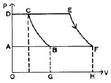
- 도형 ABCDA의 면적
- 도형 BCEFB의 면적
- 도형 OGBCDO의 면적
- 도형 AFEDA의 면적
(정답률: 86%)
33. 엔진정격(Engine Rating)은 정해진 조건하에서 엔진을 운전할 경우 보증되고 있는 엔진의 성능 값을 말하는데 다음 중 이에 속하지 않는 것은?
- 이륙출력
- 최대연속출력
- 사용가능연료 및 오일의 등급
- 최대하강출력
(정답률: 64%)
34. 다음 중 축류 압축기의 실속을 방지하기 위한 방법이 아닌 것은?
- 확산형 배기 덕트를 장착한다.
- 다축 기관의 구조를 사용한다.
- 가변스테이터(stator)를 장착한다.
- 블리이드 밸브(bleed valve)를 장착한다.
(정답률: 73%)
35. 항공용 왕복기관의 압축비를 옳게 나타낸 것은? (단, Vd는 행정체적, Vc는 연소실 체적이다.)
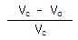
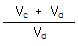
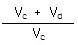
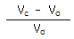
(정답률: 57%)
36. 제트 엔진 부분에서 다음 중 압력이 가장 높은 부위는?
- 터빈 입구
- 압축기 입구
- 터빈 출구
- 압축기 출구
(정답률: 77%)
37. 제트기관 항공기가 300m/s의 속도로 비행할 때 배기가스속도가 900m/s라면 이 기관의 추진효율은 몇 % 인가?
- 30
- 50
- 60
- 70
(정답률: 40%)
38. 가스터빈 기관용 원심식 압축기에 대한 설명으로 틀린 것은?
- 시동출력이 낮다.
- 단당 압축비가 높다.
- 회전 속도 범위가 넓다.
- 대형 기관과 주동력 장치에 주로 사용한다.
(정답률: 76%)
39. 엔진오일 탱크 내 호퍼(hopper)의 주목적은?
- 오일을 냉각시켜 준다.
- 오일 압력을 상승시켜 준다.
- 오일 내의 연료를 제거시켜 준다.
- 시동 시 오일의 온도 상승을 돕는다.
(정답률: 73%)
40. 프로펠러를 장비한 경항공기에서 감속기어 (Reduction gear)를 사용하는 가장 주된 이유는?
- 깃 길이를 짧게 하기 위하여
- 깃 끝 부분에서의 실속방지를 위하여
- 프로펠러 회전속도를 증가시키기 위하여
- 깃의 진동을 방지하고 구조를 간단히 하기 위하여
(정답률: 85%)
3과목: 항공기체
41. 다음 중 모노코크형 동체의 구조 부재가 아닌 것은?
- 외피
- 세로대
- 벌크헤드
- 정형재
(정답률: 62%)
42. 다음과 같은 항공기용 리벳의 표시 중 “5”가 의미하는 것은?
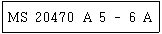
- 재질
- 머리형상
- 리벳지름
- 리벳길이
(정답률: 86%)
43. 알클래드(alclad)판은 어떤 목적으로 알루미늄 합금판 위에 순수 알루미늄을 피복한 것인가?
- 공기 저항 감소
- 기체 전기저항 감소
- 인장강도의 증대
- 공기 중에서의 부식 방지
(정답률: 90%)
44. 굴곡 각도가 90°일 때 세트백(Set Back)을 계산 하는 식으로 옳은 것은? (단, S는 세트백, T는 두께, R은 굴곡반경, D는 지름이다)
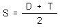
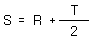
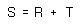
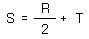
(정답률: 82%)
45. 다음 중 조종계통이 탭(tab)에 연결되어 탭을 작동시킴으로써 풍압에 의해 주 조종면(Primary controlsurface)을 작동시키는 탭은?
- 트림 탭 (Trim tab)
- 스프링 탭 (Spring tab)
- 조종 탭 (Control tab)
- 밸런스 탭 (Balance tab)
(정답률: 57%)
46. 항공기용 리벳 중 2017 알루미늄 재질을 나타내는 기호는?
- A
- D
- AD
- DO
(정답률: 80%)
47. 다음 중 응력(stress)의 단위가 아닌 것은?
- kgf/cm2
- N/m2
- lb/in2
- kJ/m2
(정답률: 79%)
48. 그림과 같이 보에 집중하중이 가해질 때 하중 중심의 위치는?
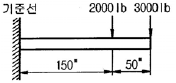
- 기준선에서부터 150“
- 기준선에서부터 180“
- 보의 우측 끝에서부터 150“
- 보의 우측 끝에서부터 180“
(정답률: 74%)
49. 경항공기에 사용되는 스프링의 탄성에너지에 의한 방법으로 충격에너지를 흡수하는 강착장치(Landinggear)의 완충 효율은 몇 %인가?
- 25
- 30
- 50
- 60
(정답률: 83%)
50. 그림과 같이 봉의 길이가 같고, 단면적이 다른 두개의 동일 재료로 단면이 일정한 봉으로 이루어진 구조물에 하중 PA , PB 가 작용하고 있다면 이 구조물의 총 변형 에너지는? (단, L은 봉의 길이, E는 봉의 탄성계수, AA , AB 는 각 봉의 단면적이다.)
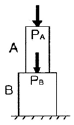
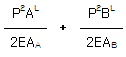
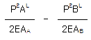
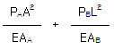
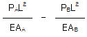
(정답률: 60%)
51. 둥근 머리(Round Head) 리벳의 길이에 관한 설명 중 옳은 것은?
- 리벳의 길이는 결합판재 중 두꺼운 판재의 두께와 리벳 지름의 3배를 합한 길이를 선택한다.
- 리벳의 길이는 머리 아랫면부터 섕크 끝까지의 길이를 말한다.
- 성형머리(shop head)의 폭은 리벳 길이의 0.2배가 가장 적당하다.
- 모든 리벳은 같은 길이로 제조되며 원하는 길이로 잘라 사용한다.
(정답률: 56%)
52. AA 규격에서 규정하는 알루미늄의 특성기호 중 “T6"가 의미하는 것은?(오류 신고가 접수된 문제입니다. 반드시 정답과 해설을 확인하시기 바랍니다.)
- 풀림 처리한 것
- 용체화 처리 후 냉간 가공한 것
- 제조 상태 그대로인 것
- 저온 성형 공정에서 열간가공 후 인공 시효한 것
(정답률: 63%)
53. 그림 같은 항공기에서 무게중심의 위치는 기준선으로부터 약 몇 m인가?
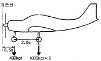
- 0.72
- 1.50
- 2.17
- 3.52
(정답률: 71%)
54. 그림 같이 길이 5m인 보에 A단에서 2m인 곳에 800kgf의 집중 하중이 작용 할 때 A단에서의 반력은 몇 kgf인가?
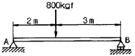
- 300
- 320
- 400
- 480
(정답률: 52%)
55. 가스용접을 할 때 사용하는 산소와 아세틸렌가스 용기의 색을 옳게 나타낸 것은?
- 산소용기 : 청색, 아세틸렌용기 : 회색
- 산소용기 : 녹색, 아세틸렌용기 : 황색
- 산소용기 : 청색, 아세틸렌용기 : 황색
- 산소용기 : 녹색, 아세틸렌용기 : 회색
(정답률: 83%)
56. 항공기의 날개에서 취부각(Angle of Incidence)을 옳게 설명한 것은?
- 날개의 횡평면과 비행기의 가로축 사이의 각
- 날개의 시위선과 비행기의 세로축 사이의 각
- 후퇴익의 기준선과 주어진 가상 기준선 사이의 각
- 날개의 평균 캠버와 항공기 진행 방향이 이루는각
(정답률: 61%)
57. 다음 중 마그나플럭스(magna flux)검사가 가능한 재질은?
- 철과 같은 자성체
- 모든 항공기 부속품
- 나무나 플라스틱 제품
- 스테인리스강 및 크롬-니켈
(정답률: 82%)
58. 조종 케이블 계통(Control cable system)에서 온도변화에 관계없이 자동적으로 항상 일정한 케이블 장력(Cable tension)을 유지하기 위한 장치는?
- 케이블드럼(cable drum)
- 케이블쿼드란트(cable quardrant)
- 케이블장력계(cable tension meter)
- 케이블장력조절장치(cable tension regulator)
(정답률: 82%)
59. 다음 중 이질 금속간 부식이 가장 잘 일어날 수 있는 조합은?
- 납 - 철
- 동 - 알루미늄
- 동 - 니켈
- 크롬 - 스테인리스강
(정답률: 66%)
60. 복합 소재의 부품을 경화시킬 때 표면에 압력을 가하기 위해 사용하는 것으로 클램프로 고정할 수 없는 대형 윤곽의 표현에 사용하는 것은?
- 직포
- 램프
- 숏 백
- 스프링 클램프
(정답률: 73%)
4과목: 항공장비
61. 그림과 같은 병렬 공진회로의 공진주파수는 약 몇 kHz인가?
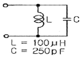
- 15.9
- 31.8
- 318
- 1006.6
(정답률: 46%)
62. 다음 항공기용 스위치 중 스프링을 이용한 스위치의 결함을 방지하기 위하여 스위치와 피검출물과 기계적 접촉을 없앤 구조의 스위치는?
- 토글 스위치(Toggle switch)
- 마이크로 스위치(Micro switch)
- 플럭시미티 스위치(Proximity switch)
- 회전 선택 스위치(Rotary selector switch)
(정답률: 70%)
63. 정상유압 동력계통에 고장이 발생했을 때 비상계통을 사용할 수 있도록 해주는 밸브는?
- 셔틀밸브(Shuttle valve)
- 선택밸브(Selector valve)
- 시퀀스밸브(Sequence valve)
- 수동체크밸브(Manual Check valve)
(정답률: 67%)
64. 24V, (1/3)HP인 전동기가 효율 75%로 작동하고 있다면 이 때 전류는 약 몇 A 인가?(오류 신고가 접수된 문제입니다. 반드시 정답과 해설을 확인하시기 바랍니다.)
- 7.8
- 13.8
- 22.8
- 30.0
(정답률: 31%)
65. 항공기에 정속구동장치(Constant Speed Drive)를 장착하는 주목적은 무엇을 유지하기 위한 것인가?
- 전압
- 전류
- 위상
- 주파수
(정답률: 76%)
66. 그림과 같은 Wheatstone bridge가 평형이 되려면 X의 저항은 몇 Ω이 되어야 하는가?
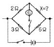
- 3
- 4
- 5
- 6
(정답률: 89%)
67. 다음 중 자이로(Gyro)의 강직성 또는 보전성에 대하여 옳게 설명한 것은?
- 외력을 가하지 않는 한 일정한 자세를 유지하려는 성질
- 외력을 가하면 그 힘의 방향으로 자세가 변하려는 성질
- 외력을 가하면 그 힘과 직각방향으로 자세가 변하려는 성질
- 외력을 가하면 그 힘과 반대방향으로 자세가 변하려는 성질
(정답률: 79%)
68. 자기 컴파스가 위도에 따라 기울어지는 현상은 무엇 때문인가?
- 지자기의 편각
- 지자기의 수평분력
- 지자기의 복각
- 컴파스 자체의 북선오차
(정답률: 57%)
69. 항공기 VHF 통신 장치에 관한 설명 중 틀린 것은?
- 근거리 통신에 이용된다.
- VHF 통신 채널 간격은 30kHz이다.
- 수신기에는 잡음을 없애는 스퀠치회로를 사용하기도 한다.
- 국제적으로 규정된 항공 초단파 통신주파수 대역은 108~136MHz 이다.
(정답률: 69%)
70. 다음 중 고도계에서 발생되는 오차가 아닌 것은?
- 북선오차
- 기계오차
- 온도오차
- 탄성오차
(정답률: 77%)
71. 항공기 유압계통의 작동유(Hydraulic fluid)가 갖추어야 할 조건이 아닌 것은?
- 점도가 높을 것
- 부식성이 낮을 것
- 열전도율이 좋을 것
- 화학적 안정성이 높을 것
(정답률: 78%)
72. HF 통신계통에서 안테나 커플러(Coupler)를 장착하는 주된 이유는?
- 안테나의 강도를 높이기 위하여
- 항공기의 구조적인 안전을 위하여
- 항공기의 항속거리를 높이기 위하여
- 송수신기와 안테나간의 주파수 매칭을 위하여
(정답률: 91%)
73. 열팽창률이 높은 스테인리스 케이스 안에 열팽창률이 낮은 니켈-철의 합금편 2대를 마주보기 휘어 장착한 것으로써 열에 의해 케이스가 합금편보다 많이 팽창하여 두 합금편이 접촉되면서 화재를 알려주는 방법의 화재 탐지 장치는?
- 용량형
- 서모 커플형
- 저항 루프형
- 서멀 스위치형
(정답률: 57%)
74. 전기저항식 온도계의 온도 수감부(temperaturebulb)가 단선되었을 때 지시값의 변화로 옳은 것은?
- 단선 직전의 값을 지시한다.
- 지시계의 지침은 ‘0’값을 지시한다.
- 지시계의 지침은 저온측의 최소값을 지시한다.
- 지시계의 지침은 고온측의 최대값을 지시한다.
(정답률: 67%)
75. 방빙 계통에 대한 다음 설명 중 옳은 것은?
- 프로펠러의 방빙, 제빙에는 스링거 링(SlingerRing)을 이용해 날개끝 부분에 뜨거운 공기를 공급한다.
- 기화기(Carburetor)는 Water Separator를 사용하여 흡입공기의 수분을 제거함으로써 방빙을 한다.
- Drain Master의 예열은 지상 계류시에는 저전압으로 예열된다.
- 연료에 수분이 포함되면 필터부분에 결빙이 발생되므로 이를 방지하기 위해 필터 앞에 전기히터를 설치한다.
(정답률: 48%)
76. 다음 중 비행계기만을 포함하고 있는 것은?
- 고도계, 속도계, 나침반, TACAN
- 고도계, 속도계, 승강계, 연료 압력계
- 고도계, 속도계, 자세지시계, Machmeter
- 고도계, 속도계, 회전계, 흡입공기 온도계
(정답률: 63%)
77. 다음 중 작동유가 과도하게 흐르는 것을 방지하기 위한 장치는
- Filter
- Priority Valve
- By-Pass valve
- Hydraulic Fuse
(정답률: 63%)
78. 다음 중 압력조절기와 비슷한 역할을 하지만 압력 조절기 보다 약간 높게 조절되어 있어, 이 이상의 압력이 되면 작동되는 장치는?
- 리저버 (Reservoir)
- 체크밸브 (Check valve)
- 축압기(Accumulator)
- 안전밸브(Relief valve)
(정답률: 60%)
79. 항공기 객실여압(Cabin Pressurization)과 직접관계되지 않은 것은?
- 항공기 기체구조 강도
- 항공기 운용고도
- 항공기 객실 여압고도
- 항공기 착륙안전고도
(정답률: 74%)
80. EICAS(Engine Indication and Crew AlertingSystem)의 기능이 아닌 것은?
- Engine Parameter를 지시한다.
- 항공기의 각 System을 감시한다.
- Engine 출력을 설정할 수 있다.
- System의 이상상태 발생을 지시해 준다.
(정답률: 78%)